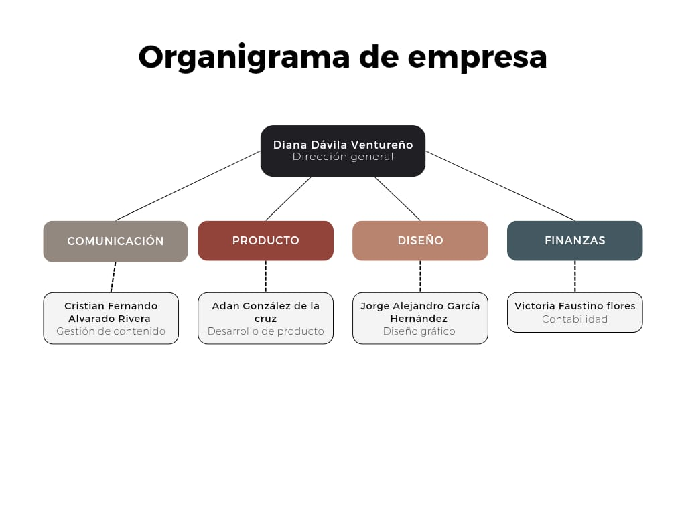

Colegio de Estudios Científicos y Tecnológicos del Estado de Zacatecas
Plantel Tlaltenango
¿Quienes Somos?
El servicio que ofrecemos es la resolución de problemas sobre el tapado de drenaje, así mismo, otros problemas relacionados al hogar, desde plomería hasta carpintería. Nos encargaremos de recibir sus problemas de obstrucción en drenajes, enviándoles un encargado y experto a hacer el trabajo, en el periodo de tiempo más corto posible.
A lo largo de las decadas siguientes, el plantel ha ido consolidando su infraestructura y oferta educativa. Se han habilitado aulas, laboratorios y talleres para las diversas areas tecnicas, ampliando gradualmente el campus. Adicionalmente, se ha fortalecido la matricula estudiantil integrando proyectos de investigacion y actividades extracurriculares (servicio social, deporte, cultura). Aunque no se dispone de cifras exactas por año, CECyTEZ en su conjunto reporta varios miles de alumnos en sus planteles.
Desde su fundacion uno de los principales responsables de la administracion ha sido la Lic. Maricela Serrano Delgado, quien figura como directora del plantel desde aproximadamente 1997.
